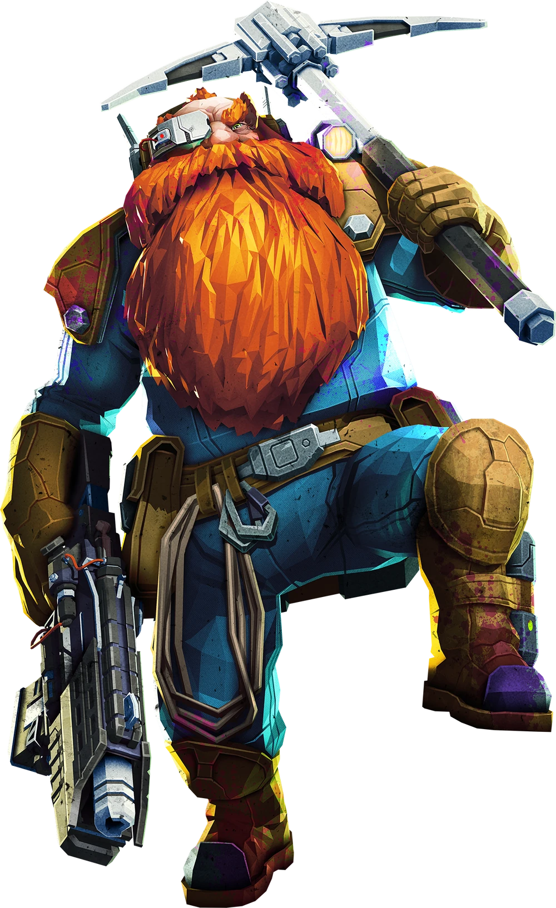
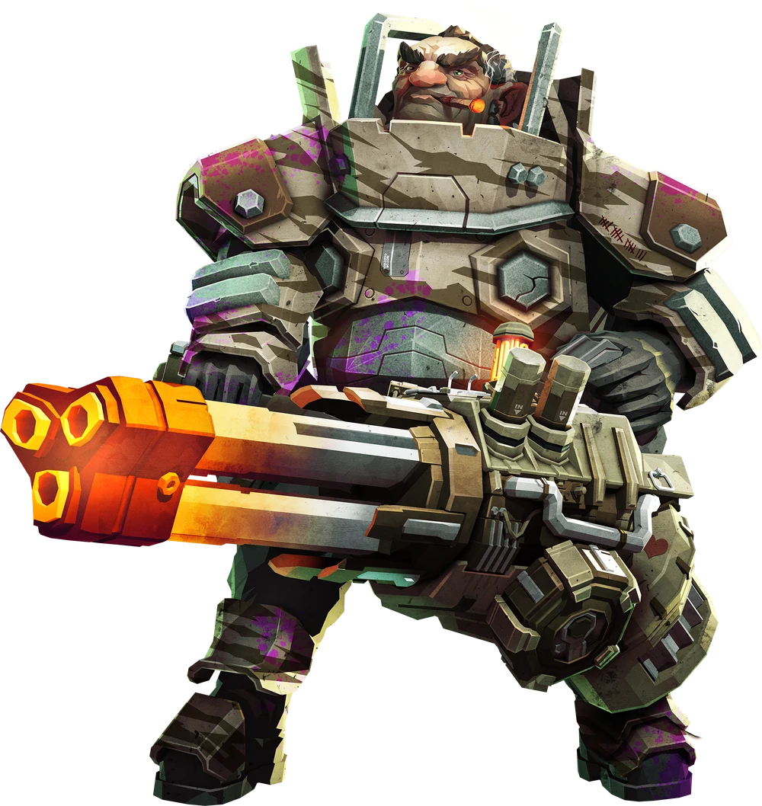
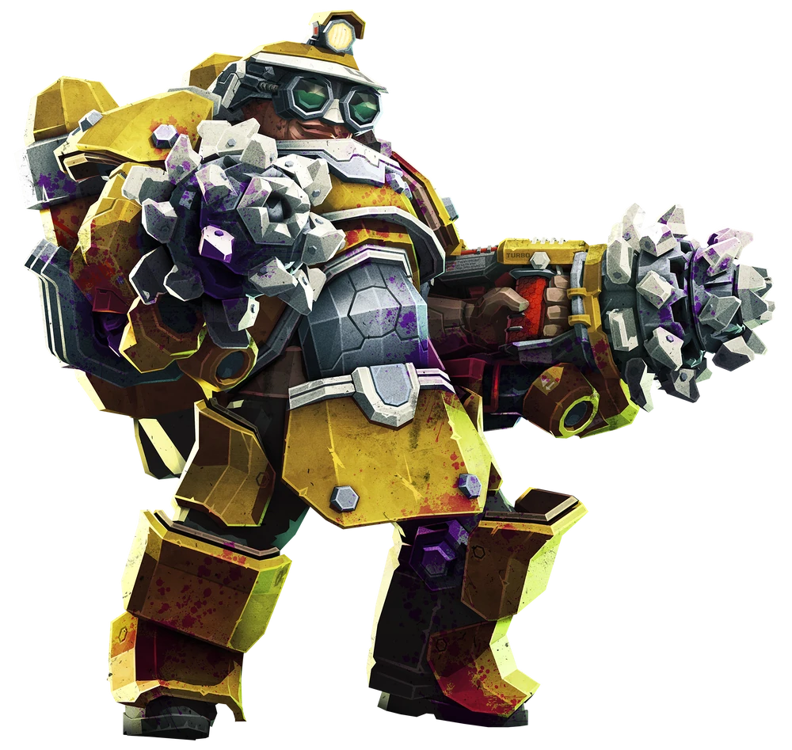
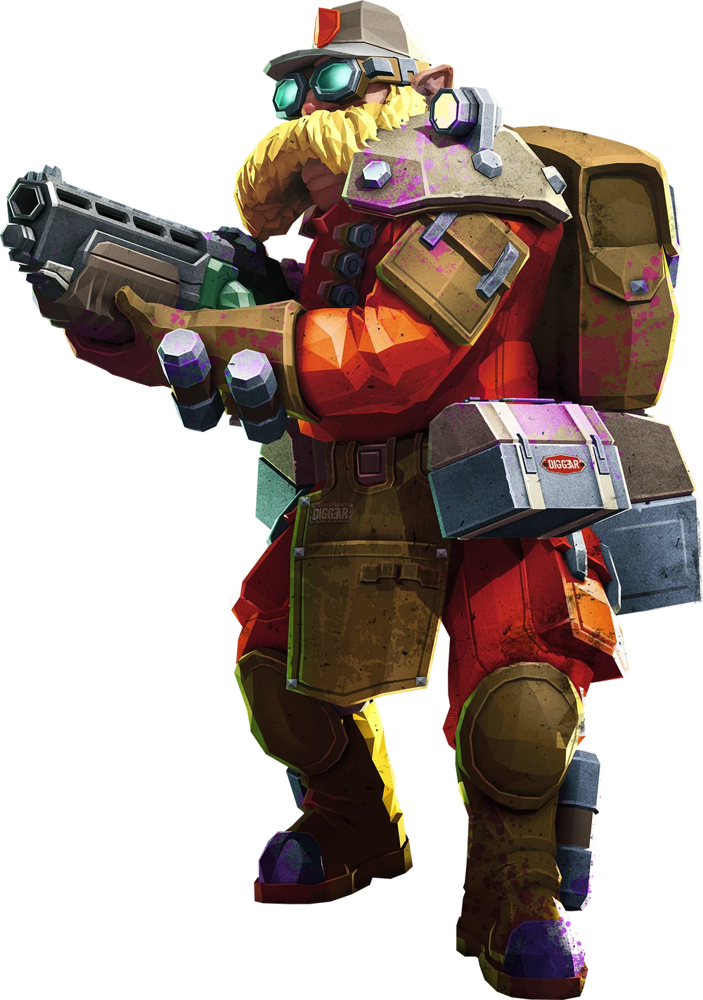

Scout

The Scout's Job in missions is to get things done faster than other the other dwarves with his grappling hook, like gettings to the Aquarq,Eggs, and Nitra. The scout lacks in the multi-target damage area, but this is balanced with his ultily for killing single high value enemys. The scout's more passive job is to make sure the caves stay light up with his Flare gun.
Gunner

The Gunner's Job is to help defend the objectives,Deal with large crowds of enemys during swarms,Protect teamates with his shield, and get his team from point A to point B with his Zipline Launcher.
Driller

The Driller's Job is to also get the team for point A to point B, but the driller is able to get the team through walls of the caves easily with his High power Drills, Besisdes helping get the team to places the driller also wants to be making safe bunker like areas in the ground incase the team needs to hold down a certain area. The Driller's weapons provide suppor with different elemental capabilites letting him help add Debuffs to the enemys to help clear waves easier.
Enginner

The Engineer's job is to help lock down areas and help provide covering fire for the team with his Sentry Guns, The engineer works and in hand with the scout since the Engineer is packing a Platform gun that allows him to fire off a platform onto any surface, This helps the scout get objectives stuck in high places with nowhere to stand. The engineers arsenal can pack a punch even without his sentrys but lacks in the movement capabilies that the other classes have.